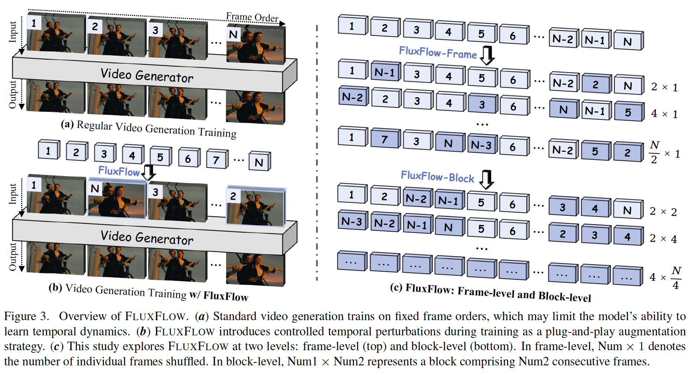

Temporal Regularization Makes Your Video Generator Stronger
1Everlyn AI 2HKUST 3UCF 4HKU
Abstract
Temporal quality is a critical aspect of video generation, as it ensures consistent motion and realistic dynamics across frames. However, achieving high temporal coherence and diversity remains challenging. In this work, we explore temporal augmentation in video generation for the first time, and introduce FluxFlow for initial investigation, a strategy designed to enhance temporal quality. Operating at the data level, FluxFlow applies controlled temporal perturbations without requiring architectural modifications. Extensive experiments on UCF-101 and VBench benchmarks demonstrate that FluxFlow significantly improves temporal coherence and diversity across various video generation models, including U-Net, DiT, and AR-based architectures, while preserving spatial fidelity. These findings highlight the potential of temporal augmentation as a simple yet effective approach to advancing video generation quality.
Overview

Evaluations
CogVideoX-2B
NOVA
VideoCrafter2
BibTeX
@article{chen2025temporal,
title={Temporal Regularization Makes Your Video Generator Stronger},
author={Chen, Harold Haodong and Huang, Haojian and Wu, Xianfeng and Liu, Yexin and Bai, Yajing and Shu, Wen-Jie and Yang, Harry and Lim, Ser-Nam},
journal={arXiv preprint arXiv:2503.15417},
year={2025}
}